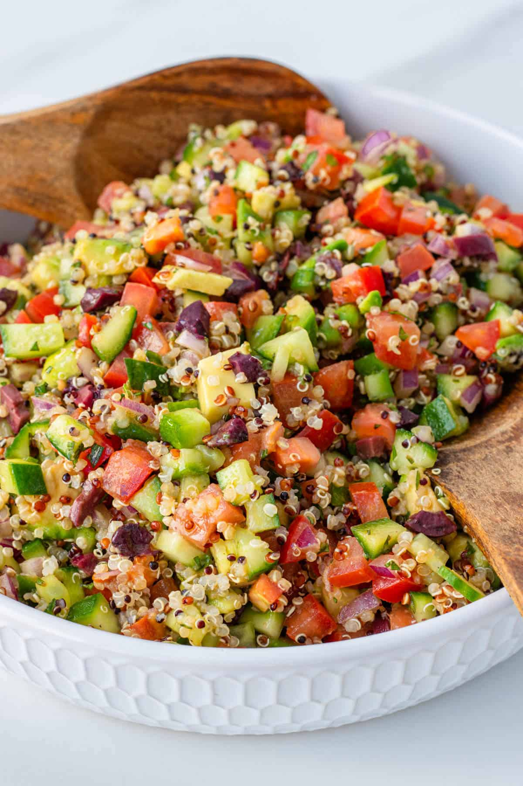
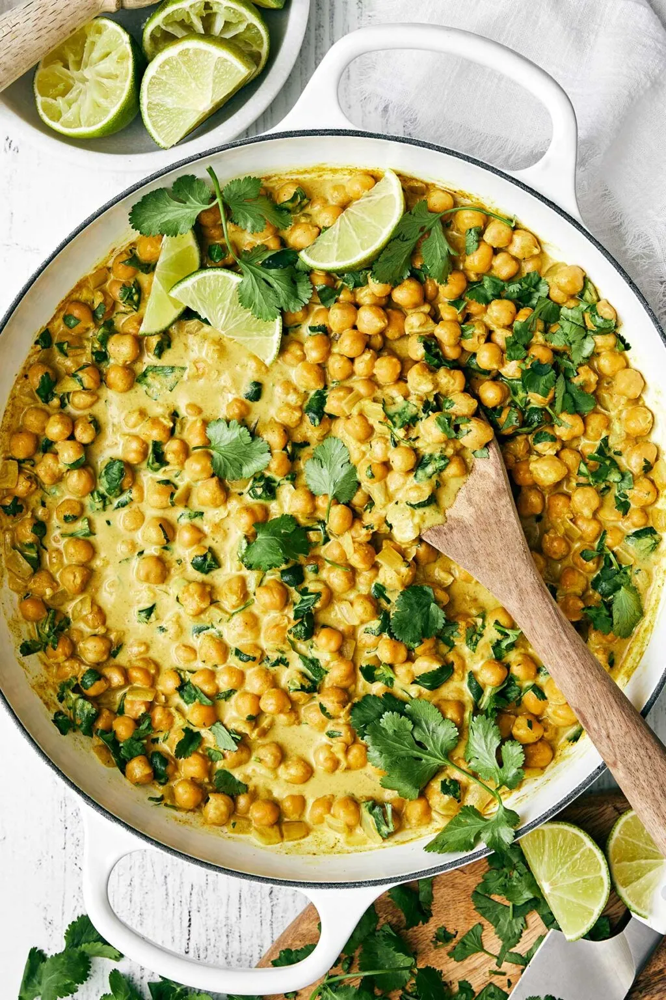
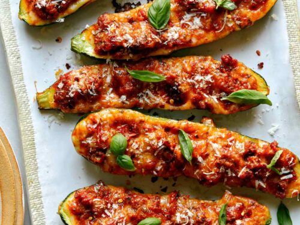
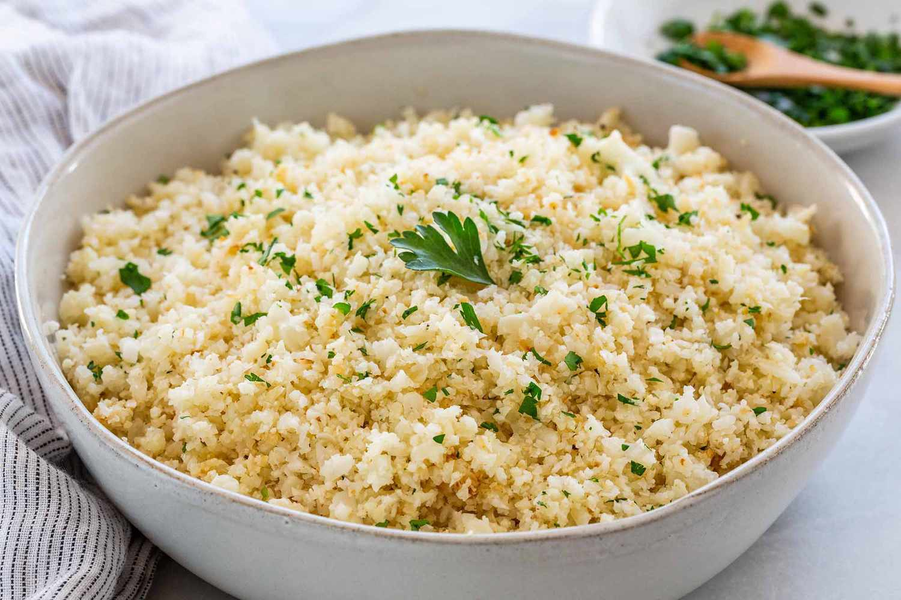
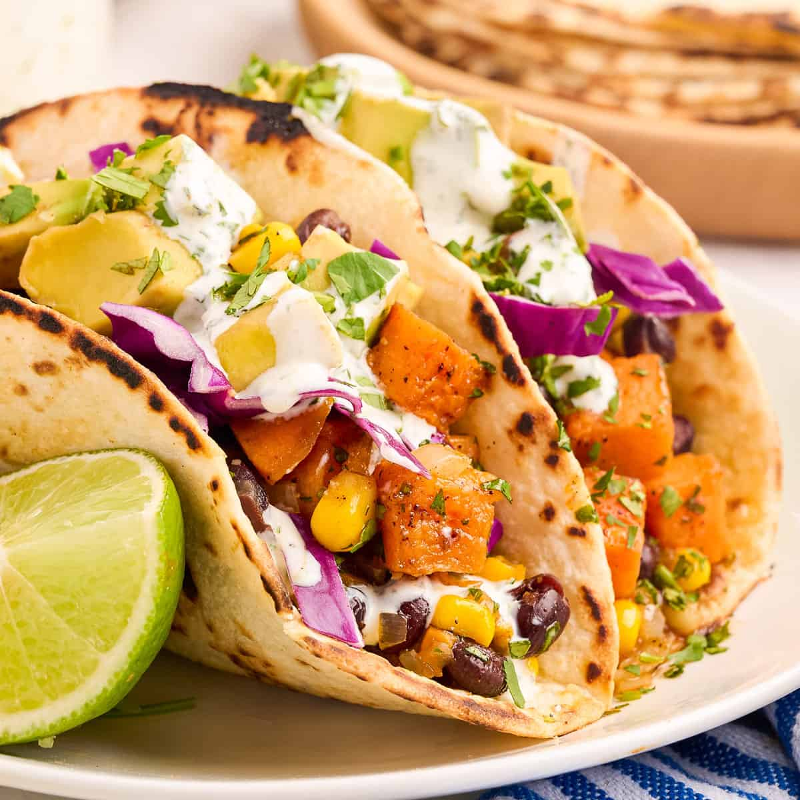
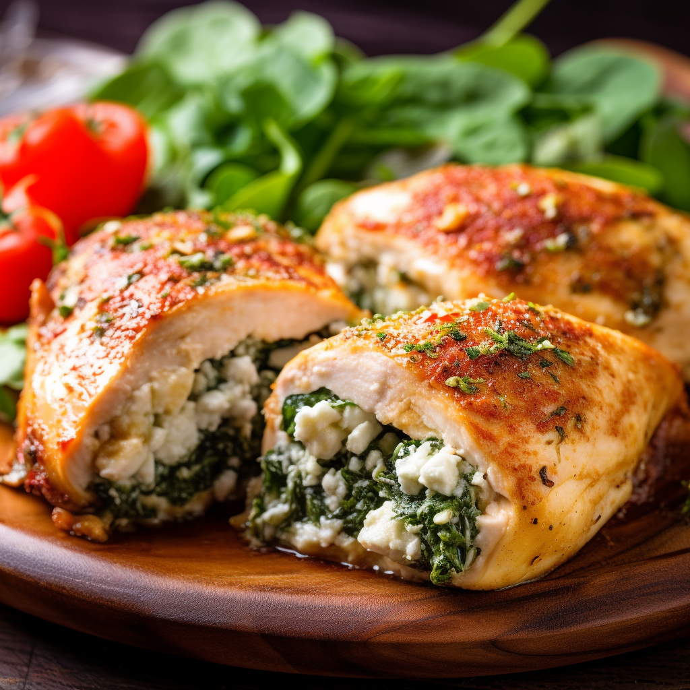
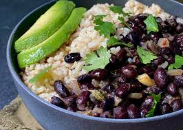
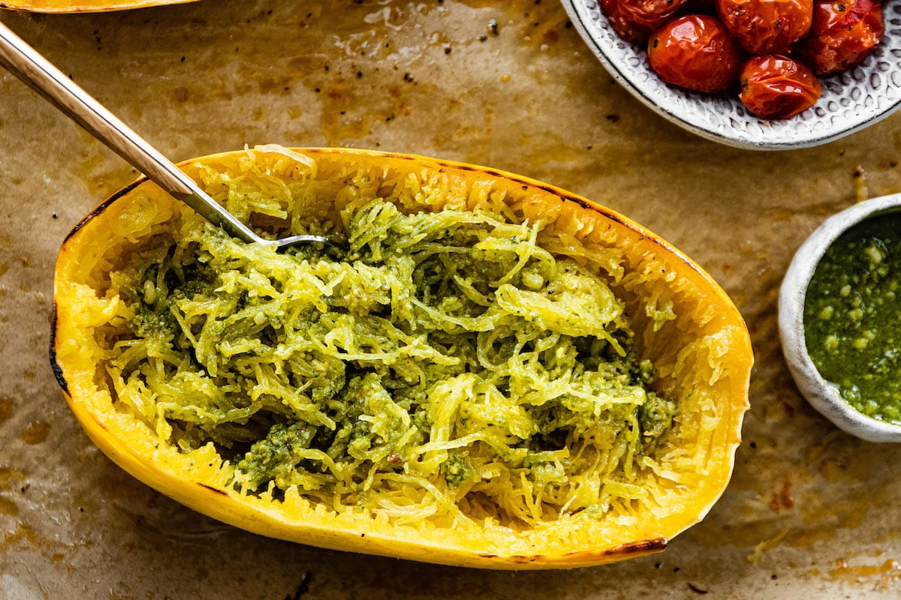
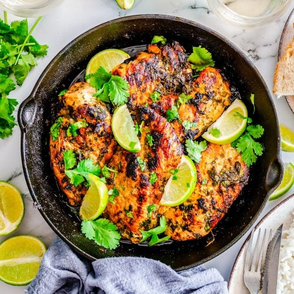

Quinoa Salad

Ingredients:
- 1 cup (170g) quinoa
- 2 cups (480ml) vegetable broth
- 1 cucumber, diced
- 1 bell pepper, diced
- 1/4 cup (60ml) olive oil
- Juice of 1 lemon
Tutorial:
Cook quinoa in broth. Mix with vegetables, olive oil, and lemon juice.
Tips:
Chill before serving for a refreshing dish.
Chickpea Curry

Ingredients:
- 1 can (400g) chickpeas, drained
- 1 can (400g) coconut milk
- 1 onion, diced
- 2 tbsp curry powder
- Spinach (optional)
Tutorial:
Sauté onion, add curry powder, chickpeas, and coconut milk. Simmer for 15 minutes. Add spinach before serving.
Tips:
Serve with brown rice or whole grain naan.
Stuffed Zucchini Boats

Ingredients:
- 4 zucchinis, halved
- 1 cup (150g) quinoa or brown rice
- 1 cup (150g) black beans, drained
- 1/2 cup (50g) salsa
- 1/2 cup (50g) shredded cheese (optional)
Tutorial:
Bake zucchini halves. Mix cooked quinoa/rice with beans and salsa. Fill zucchini and top with cheese. Bake until heated through.
Tips:
Use different veggies or grains to customize.
Lentil Soup

Ingredients:
- 1 cup (200g) lentils
- 1 onion, diced
- 2 carrots, diced
- 2 celery stalks, diced
- 4 cups (960ml) vegetable broth
Tutorial:
Sauté onion, carrots, and celery. Add lentils and broth, simmer until lentils are tender.
Tips:
Blend for a creamy texture if desired.
Oven-Baked Chicken Breast

Ingredients:
- 4 chicken breasts
- 2 tbsp olive oil
- 1 tsp garlic powder
- 1 tsp paprika
- Salt and pepper
Tutorial:
Rub chicken with olive oil and seasonings. Bake at 375°F (190°C) for 25-30 minutes.
Tips:
Serve with a side salad for a complete meal.
Cauliflower Fried Rice

Ingredients:
- 1 head cauliflower, grated
- 1 cup mixed vegetables (peas, carrots)
- 2 eggs, beaten
- 2 tbsp soy sauce
- 2 green onions, chopped
Tutorial:
Sauté cauliflower and vegetables, push to the side, scramble eggs, then mix everything and add soy sauce.
Tips:
Customize with your choice of proteins.
Sweet Potato and Black Bean Tacos

Ingredients:
- 2 sweet potatoes, diced
- 1 can (400g) black beans, drained
- 8 corn tortillas
- 1 avocado, sliced
- Fresh cilantro for garnish
Tutorial:
Roast sweet potatoes, mix with black beans, and serve in tortillas topped with avocado and cilantro.
Tips:
Drizzle lime juice for extra flavor.
Spinach and Feta Stuffed Chicken

Ingredients:
- 4 chicken breasts
- 1 cup (150g) spinach, wilted
- 1/2 cup (75g) feta cheese
- 1 tbsp olive oil
- Salt and pepper
Tutorial:
Stuff chicken with spinach and feta. Season, sear in a pan, then bake at 375°F (190°C) for 25 minutes.
Tips:
Serve with a side of quinoa for extra protein.
Brown Rice and Black Bean Bowl

Ingredients:
- 1 cup (200g) brown rice
- 1 can (400g) black beans, drained
- 1 avocado, sliced
- 1/2 cup (75g) corn
- Salsa for topping
Tutorial:
Cook rice. Mix with black beans, corn, and serve with avocado and salsa on top.
Tips:
Add lime juice for freshness.
Eggplant Parmesan

Ingredients:
- 1 large eggplant, sliced
- 1 cup (120g) breadcrumbs
- 1 cup (240ml) marinara sauce
- 1 cup (120g) shredded mozzarella
- 1/4 cup (30g) Parmesan cheese
Tutorial:
Bread and bake eggplant slices. Layer with marinara and cheeses, and bake until bubbly.
Tips:
Use whole grain breadcrumbs for added fiber.
Spaghetti Squash with Pesto

Ingredients:
- 1 spaghetti squash
- 1/2 cup (120ml) pesto
- 1 cup (150g) cherry tomatoes, halved
- Parmesan cheese for serving
Tutorial:
Roast squash until tender, scrape out strands. Toss with pesto and tomatoes before serving.
Tips:
Add grilled chicken for extra protein.
Cilantro Lime Chicken

Ingredients:
- 4 chicken breasts
- 1/4 cup (60ml) lime juice
- 1/4 cup (60ml) cilantro, chopped
- 2 garlic cloves, minced
- Salt and pepper
Tutorial:
Marinate chicken in lime juice, cilantro, and garlic. Grill or bake until cooked through.
Tips:
Serve with a side of quinoa or brown rice.